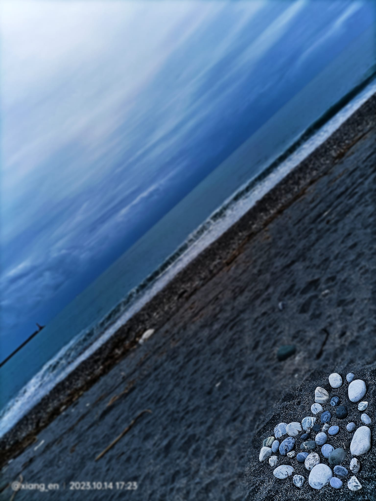

Homework: Circuits and Waveforms
High school tutor report & analysis.

Project Overview
這是一份關於電子電路與波形的詳細分析報告。內容涵蓋了示波器的使用方法、波形觀測紀錄以及電路除錯的過程。
透過這份報告，展示了我對於基礎電子學的理解，以及將理論應用於實際測量的能力。
High school tutor report & analysis.
這是一份關於電子電路與波形的詳細分析報告。內容涵蓋了示波器的使用方法、波形觀測紀錄以及電路除錯的過程。
透過這份報告，展示了我對於基礎電子學的理解，以及將理論應用於實際測量的能力。